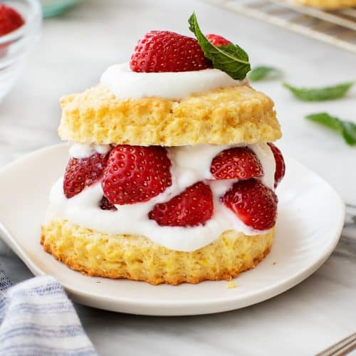

Strawberry Shortcake

Description
Strawberry shortcake is a classic summertime treat.
Shortcake generally refers to a dessert with a crumbly scone-like texture.
There are multiple variations of shortcake, most of which are served with fruit
and cream. One of the most popular is strawberry shortcake, which is typically
served with whipped cream.
Ingredients
- Strawberries: Of course, a strawberry shortcake needs strawberries. This recipe calls for six cups of fresh strawberries.
- Sugar: You'll use white sugar for both the strawberries and the shortcake.
- Flour: This strawberry shortcake is made almost like biscuits, so you'll need 2 ¼ cups of all-purpose flour.
- Baking Powder: Baking powder helps the shortcake rise.
- Salt: Just a hint of salt adds a depth of flavor to the shortcake.
- Butter: Butter is a classic shortcake ingredient.
- Egg: One egg binds the dough together.
- Half-and-half: This will make the dough rich and moist, but reviewers say they've also had success using milk instead.
- Whipped Heavy Cream: Sweetened vanilla whipped cream tops this cake.
Steps
How to Make Strawberry Shortcake:
- Slice the strawberries and cover them with white sugar.
- Combine the dry ingredients, then cut in the butter until the mixture is crumbly. Add the egg and half-and-half and stir until combined.
- Pour the batter into the prepared pan and bake until golden brown.
- Cut the cake in half. Top the bottom layer with half the strawberries, then replace the top of the cake. Top the cake with the remaining berries and whipped cream.